Формальная теория T считается определенной, если соблюдены следующие требования:
- Задано некоторое счетное множество символов теории T, в качестве которых могут быть выбраны произвольные объекты (не обязательно лингвистические). Конечные последовательности символов называются выражениями T.
- Задано счетное подмножество выражений, именуемых формулами теории T. Если можно выяснить, является ли данная формула аксиомой, то T называется аксиоматической теорией.
- Задано множество {R1, R2, ..., Rn} отношений между формулами, которые называются правилами вывода. Причем для каждого Ri существует целое положительное число k такое, что для каждого множества, состоящего из k формул, и для каждой формулы F можно выяснить, состоят ли данные k формул в отношении Ri с формулой F или нет. Если состоят, то F называется следствием из k формул по правилу Ri.
Вывод формулы G из множества формул D - это конечная последовательность формул F1, F2, ..., Fn, в которой каждая формула Fi является:
- формулой из множества D, то есть посылкой,
- одной из аксиом формальной теории,
- получена из предыдущих формул последовательности по одному из правил вывода, то есть является следствием предыдущих формул;
при этом последняя формула Fn совпадает с G.
Если множество D пусто, то есть не содержит ни одной посылки, то говорят, что G доказуема в данной формальной теории. Саму последовательность F1, F2, ..., Fn называют тогда доказательством формулы G.
Отношение выводимости обозначается символом ⊢. Например, запись F, G ⊢ H означается, что из формул F и G выводима формула H. Запись ⊢ F означает, что формула F доказана.
Натуральное исчисление высказываний (также извествое как исчисление Генценского типа, или исчисление естественного вывода) задается следующим образом.
- Множество символов соответствует алфавиту классической логики высказываний, то есть:
- пропозициональные переменные: P, Q, R, S, ..., P1, P2, ..., Pn;
- пропозициональные связки:
- ~ - отрицание (НЕ ...);
- & - конъюнкция (... И ...);
- | - дизъюнкция (... ИЛИ ...);
- => - импликация (ЕСЛИ ..., ТО ...);
- <=> - эквивалентность (..., ЕСЛИ И ТОЛЬКО ЕСЛИ ...);
- круглые скобки: ( ... ).
- Множество формул задается следующим определением.
- Любая пропозициональная переменная является формулой (логическим атомом).
- Если F - формула, то ~F - тоже формула.
- Если F и G - формулы, то выражения F & G, F | G, F => G, F <=> G также являются формулами.
- Ничто иное не является формулой.
- Правила вывода включают в себя правила введения и удаления логических связок.
Натуральное исчисление высказываний отличается от аксиоматического исчисления тем, что в нем нет формул, считающихся аксиомами. Однако в нем больше разнообразных правил вывода, компенсирующих отсутствие аксиом. В натуральном исчислении все необходимые посылки для применения правил вывода можно задать внутри доказательства в качестве гипотез.
Вводя гипотезу, мы открываем под-доказательство, то есть вложенную ветку логического вывода. Для вложенного доказательства действуют те же самые правила рассуждения, что и для основного. Выйти из под-доказательства в основную ветку рассуждения можно с помощью правила вывода введение импликации. Это правило представляет собой частный случай теоремы о дедукции: если из F выведено G, то выведено F => G. Иными словами, если, сделав предположение F, мы смогли получить из него некое G, то мы можем записать в наше доказательство формулу F => G.
-
Введение отрицания : если ⊢ F => G и ⊢ F => ~G, то ⊢ ~F.
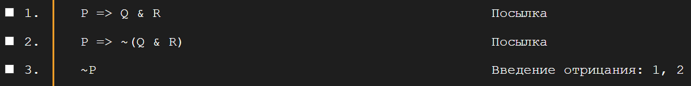 -
Удаление отрицания : если ⊢ ~~F, то ⊢ F.
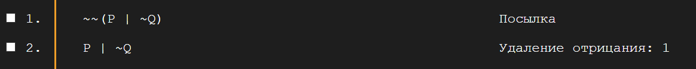 -
Введение конъюнкции : если ⊢ F и ⊢ G, то ⊢ F & G.
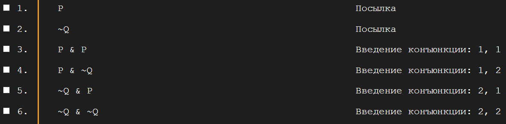 -
Удаление конъюнкции : если ⊢ F & G, то ⊢ F и ⊢ G.
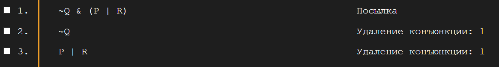 -
Введение дизъюнкции : если ⊢ F, то ⊢ F | G.
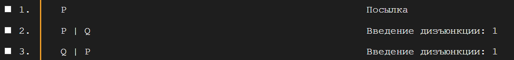 -
Удаление дизъюнкции : если ⊢ F | G, ⊢ F => H и ⊢ G => H то ⊢ H.
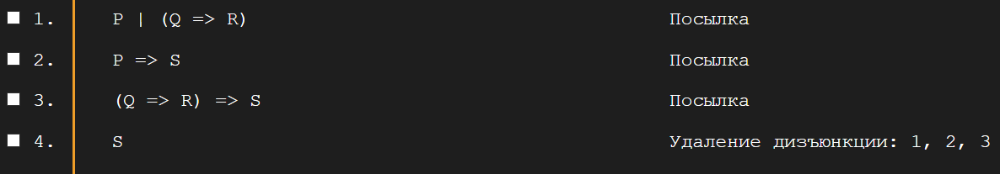 -
Введение импликации : если F ⊢ G, то ⊢ F => G.
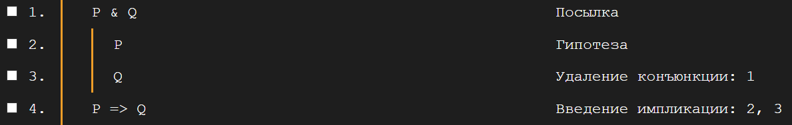 -
Удаление импликации : если ⊢ F и ⊢ F => G, то ⊢ G.
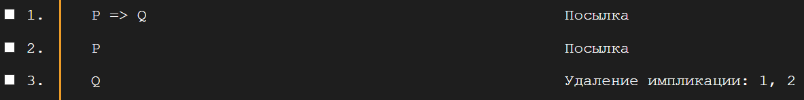 -
Введение эквивалентности : если ⊢ F => G и ⊢ G => F, то ⊢ F <=> G.
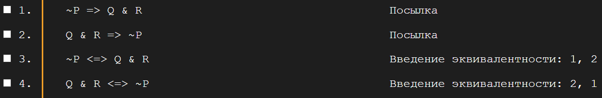 -
Удаление эквивалентности : если ⊢ F <=> G, то ⊢ F => G и ⊢ G => F.
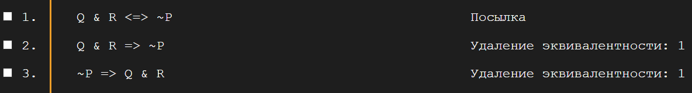
Эвристики не являются законами логики или обязательными к исполнению инструкциями. Это только полезные приемы, которые позволяют уменьшить количество вариантов гипотез, сократив таким образом путь к получению нужной формулы.
- Если цель - доказать формулу вида F => G, то следует ввести гипотезу F и в открывшемся под-доказательстве попытаться вывести G. Затем нужно использовать правило Введение импликации на первой и последней формулах под-доказательства, чтобы получить ⊢ F => G.
- Если цель - доказать формулу вида F & G, то сначала нужно вывести формулу F, а затем - формулу G. Если вывод обеих формул удался, то нужно применить на них правило Введение конъюнкции, чтобы получить ⊢ F & G.
- Если цель - доказать формулу F | G, то необходимо вывести хотя бы одну из формул F или G. Как только получен вывод одной из формул, можно получить дизъюнкцию данной формулы с любой другой формулой по правилу Введение дизъюнкции.
- Если цель - доказать формулу вида ~F, то следует ввести гипотезу F и вывести в под-доказательстве противоречие, то есть две формулы: F => G и F => ~G. Как только противоречие получено правило Введение отрицания даст нам искомую ~F.
- Если дана посылка в виде ⊢ F => G и цель - доказать G, то нужно сначала вывести F. Если вывод удался, то формулу G можно получить по правилу Удаление импликации.
- Если дана посылка в виде ⊢ F | G и цель - вывести какую-то другую формулу H, то следует сначала получить ⊢ F => H, а затем --- ⊢ G => H. На этих двух формулах и исходной дизъюнктивной посылке следует использовать правило Удаление дизъюнкции, чтобы получить H.
Замечание относительно гипотез. Гипотеза не является доказанной формулой, это только предположение, из которого мы можем дедуцировать некоторые следствия. После введения гипотезы слева от формул появляется вертикальная черта. Это значит, что данные формулы выведены на основе гипотезы и поэтому не считаются доказанными. Гипотеза и все выведенные из нее формулы справа от вертикальной черты образуют под-доказательство, вложенное в основное. Для него действуют те же правила вывода, что и для основного доказательства. Единственный способ выйти из под-доказательства - применить правило Введение импликации, основанное на теореме о дедукции. Это правило всегда соединяет первую и последнюю формулы в под-доказательстве, то есть дает нам импликацию, антецедентом которой является гипотеза, а консеквентом - последняя выведенная из гипотезы формула. Если в нашем доказательстве имеется несколько уровней вложенности (то есть гипотезы внутри гипотез), то правило Введение импликации вернет нас только на один уровень назад, то есть в предшествующую ветку доказательства. Уровней вложенности может быть сколько угодно (поэтому доказательства в натуральном исчислении называются структурными), но вывод не считается законченным, пока мы не вышли изо всех вложенных под-доказательств.
-
Закон контрапозиции : P => Q ⊢ ~Q => ~P.
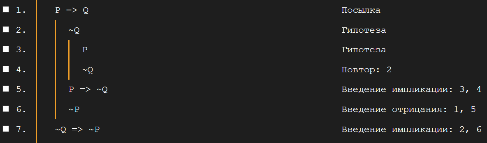 -
Закон силлогизма : P => Q, Q => R ⊢ P => R.
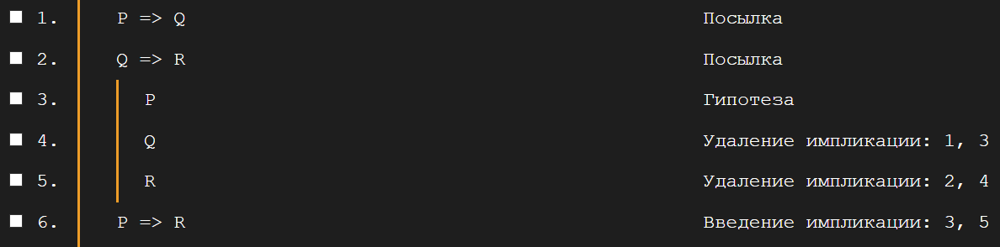 -
Закон утверждения консеквента : ⊢ P => (Q => P).
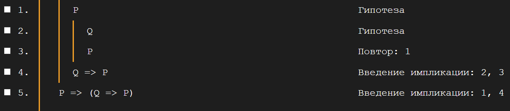 -
Закон замены импликации : P => Q ⊢ ~P | Q.
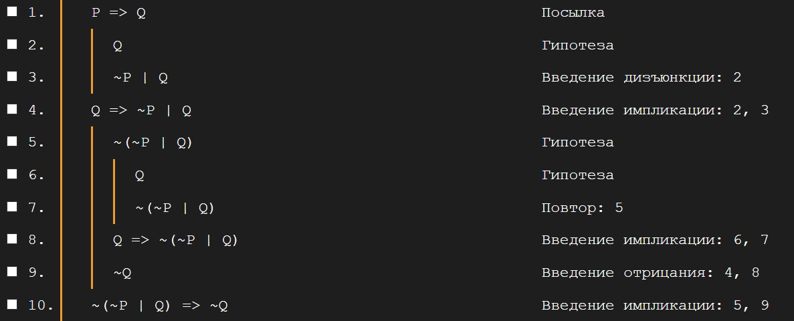
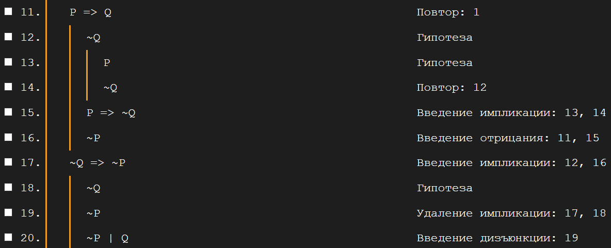
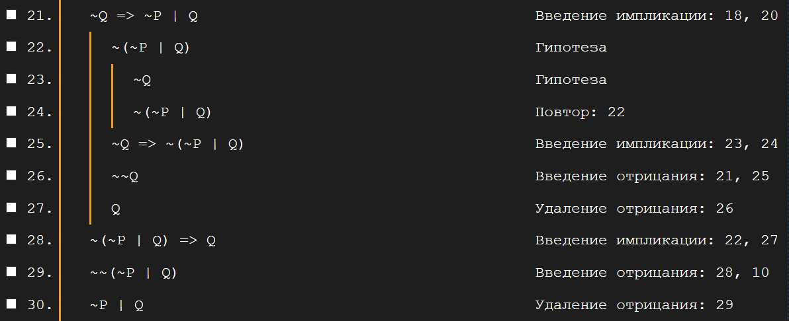
Попробуйте доказать следующие утверждения :)
- P => Q, R => (P | Q) ⊢ R => Q. (8 шагов)
- P => (Q => R) ⊢ (P => Q) => (P => R). (8 шагов)
- ⊢ P => (Q => R) => ((P => Q) => (P => R)). (9 шагов)
- ⊢ (~P => Q) => ((~P => ~Q) => P). (6 шагов)
- P ⊢ ~~P. (7 шагов)
- ⊢ ((P => Q) => P) => P. (22 шага)